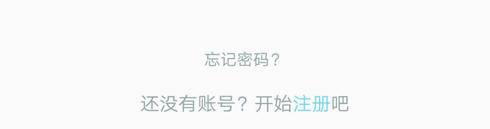
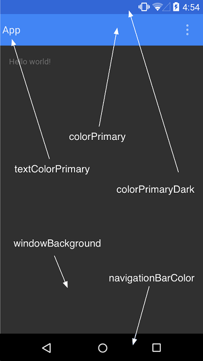

虽然之前也接触过Android，并且写过一些不忍直视的小项目，但是之前都是就解决问题而解决问题，当我下次遇到问题的时候，我又要重新百度谷歌…做着周而复始的事情。
在这个短暂的暑假，打算自己想个项目写写，将就重新学学Android，毕竟以后毕业估计也就从事Android开发，拿点固定工资将就过日子吧~
此篇文章仅记载我在这个暑假这个项目中，遇到的问题，以及解决的过程，仅仅是记载着以备下次又要重新百度谷歌….希望暑假过完，我能有一些想要的收获~
2017 / 07 / 12
问题：使用Android studio开发过程中，新建一个Activity都是继承 AppCompatActivity，然而搜索Android设置全屏，基本都是两种方法：
方法1：AndroidManifest.xml 里，Activity的 android:theme 指定为
1 | " @android:style/Theme.NoTitleBar.Fullscreen" |
方法2：在onCreate中添加如下代码
1 | /*set it to be no title*/ |
但是对于继承AppCompatActivity的Activity，上述方法会报错…说AppCompatActivity必须使用Theme.AppCompat主题。
解决办法：在style.xml中自己写一个style，继承Theme.AppCompat.Light.NoActionBar，并且在item中如下添加代码。
1 | <style name="FullScreen" parent="Theme.AppCompat.Light.NoActionBar"> |
最后在 AndroidManifest.xml中，设置该Activity的android:theme指定为以上style
1 | android:theme="@style/FullScreen" |
2017 / 07 / 13
App开发经常使用到Vector，以前都是自己把data数据复制进去，自己进行svg到drawable的转换…想想以前自己转换，真的好傻 ￣へ￣..
找到一个在线转换Android SVG to VectorDrawable
传送门在此~http://inloop.github.io/svg2android/
登录界面有些时候输入框会把登录按钮等控件遮挡住，很影响用户体验。
参考http://blog.csdn.net/harryweasley/article/details/50266749
在Activity的oncreate()中添加如下代码：
1 | //root是根布局，为其添加一个布局变化监听器 |
并且在AndroidManifest.xml文件中设置该Activity软键盘模式为adjustPan。
1 | android:windowSoftInputMode="adjustPan" |
补充一个直接隐藏软键盘代码
1 | //隐藏软键盘 |
2017 / 07 / 17
好吧，前两天又堕落了。其实也不算堕落，15号国际周考试结束，就16号一天的假，今天又开始小学期，我也让自己耍耍吧（强行找理
由，hhh
TextView中的字体颜色设置，一个TextView中，字显示不一样的颜色。

如上图所示，很多app里面都会把 “注册” 两个字显示不同的颜色。
方式，如下代码：
1 | //设置字体颜色 |
2017 / 08 / 04
两周小学期，28号才结束，中间间断性的写了一点android，但是主要项目还是小学期的项目Muse后台。这几天在家，其实也一直在写Android，但是，都是零碎的，先放在这吧…
首先是今天弄得，在主题颜色部分，寄一张图在这~（盗图。有空再补上去

####
2017 / 08 / 14
前几天其实学的挺多的~只是都没怎么写，这两天补上
关于Android NavigationView侧边栏的使用详细内容看另一篇博客：Android-NavigationView实现侧边栏
关于TabLayout和ViewPager联合使用，详细内容看另一篇博客：Android TabLayout+ViewPager实现分页